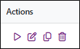

Clean personal data from responses
Personal data management allows you to delete data that should no longer be retained in collected responses.
A cleanup action replaces the values of the selected variables with a non-response. Cleanup can be performed after a defined retention period or based on the answer to an anonymity waiver question.
BEWARE: Setting up a cleanup action is retroactive. It applies to all responses collected since the survey was set up that meet the defined conditions.
BEWARE: Cleanup is permanent. Cleaned data cannot be restored.
Create a cleanup action
To create a cleanup action:
-
Select Personal data management from the Data tab, then click Create an action.
-
Enter a name to identify the action in Action name.
-
Enter the date from which the cleanup action should start running in Start on.
-
Select Stop on, then enter an end date if you want the action to stop running on a specific date.
-
Select Restrict cleanup to a profile, then select the profile to use if you want the cleanup to apply only to specific responses. The profile determines which responses the cleanup action applies to.
EXAMPLE: A survey collects responses for several brands with different data retention policies. If data for respondents associated with Brand A can be retained for a maximum of 18 months, use a profile to target only these respondents and apply the corresponding cleanup action.
-
Choose the type of cleanup to apply in Trigger conditions.
-
Recurring cleanup based on a duration
-
Select Recurring cleanup based on a duration.
-
Enter the number of months for which the data should be retained in Retention time (months).
-
Select the date variable to use as the reference for calculating the retention period in Based on the variable.
When the retention period is reached, the variables selected in the cleanup action are cleaned.
EXAMPLE: You define a retention period of 12 months and select the response date as the reference variable. Once 12 months have elapsed for a response, the data covered by the cleanup action is cleaned.
-
-
Cleanup based on an answer to an anonymity waiver question
-
Select Cleanup based on an answer to an anonymity waiver question.
-
Select the variable corresponding to the anonymity waiver question in Variable.
-
Select the answer corresponding to refusal to waive anonymity in Answer option.
BEWARE: Once the respondent refuses to waive anonymity, their personal data is cleaned. It cannot be recovered if they subsequently change their answer to this question.
-
Select Non-response management if you also want to include respondents who did not answer the anonymity waiver question.
-
Enter the number of days for which the data should be retained in Retention time (days).
-
Select the date variable to use as the reference for calculating the retention period in Based on the variable.
The retention period gives respondents time to change their choice before their data is cleaned. If they choose to waive their anonymity during this period, their data is not cleaned.
When Non-response management is enabled, the same principle applies to respondents who did not answer the anonymity waiver question. They have the defined retention period to return to the questionnaire and choose to waive their anonymity. When the period expires, if anonymity has not been waived, the selected variables are cleaned.
EXAMPLE: You define a retention period of 30 days and enable Non-response management. A respondent who does not answer the anonymity waiver question has 30 days to return to the questionnaire and waive their anonymity. When this period expires, if they have not waived their anonymity, the data covered by the cleanup action is cleaned.
-
-
-
Select the Variables to clean from Available variables using the move buttons.
During cleanup, the values of these variables are replaced with a non-response.
BEWARE: Check the selected variables before saving the action. Cleaned data cannot be restored.
-
Enable Enable automatic execution to run the cleanup automatically.
When this option is enabled, the cleanup action runs automatically once a day from the date defined in Start on.
If an end date is defined in Stop on, automatic execution stops on that date.
-
Click Save.
The cleanup action is created. When automatic execution is enabled, the system checks responses daily and cleans those that meet the conditions defined in the action.
NOTE: All required settings must be completed before you can save the action. If a required setting is missing or invalid, a message appears below the corresponding field.


Receive a notification after cleanup execution
You can receive an email notification after each execution of the cleanup action. The notification provides a summary of the execution, including the number of responses cleaned.
To set up an email notification:
-
Select Set up an automatic alert.
-
Select the Sender email address to use and enter the Sender name.
-
Enter the email addresses of the recipients who should receive the notification in Use the defined email addresses.
-
Select the message Language.
A Default message is sent to the recipients. It includes the account name, study name, alert name, number of responses cleaned, execution date, and trigger conditions.
To customize the email subject and content, select Custom message.
NOTE: The content of the merge fields included in the custom message is displayed in the language selected in the previous step.
To restore the default message, click Reset the email subject and content to default.

Manage a cleanup action
You can edit, duplicate, run, or delete a cleanup action at any time. You can also enable or disable its automatic execution.

To perform an action, click the corresponding icon in the Actions column of the cleanup action list.
To run the cleanup immediately, select Run now. This runs the cleanup manually even when automatic execution is disabled.